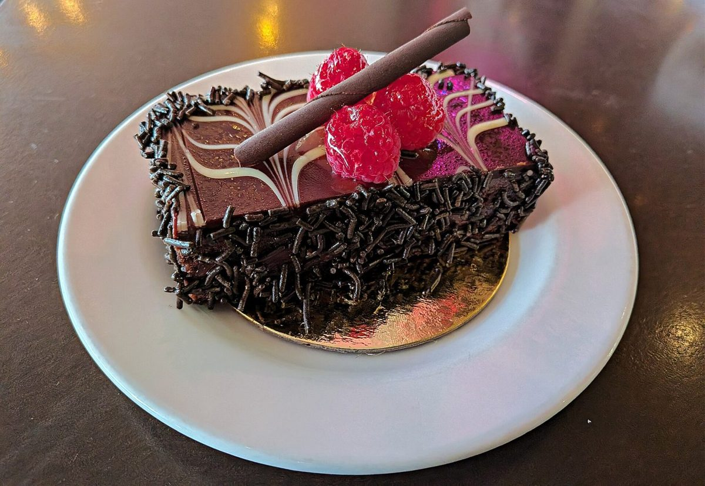
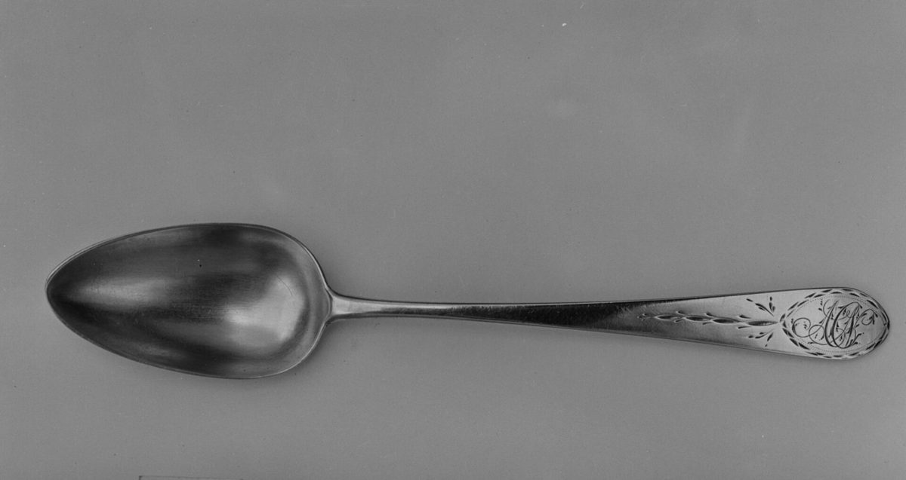

本気のティラミス
マスカルポーネのクリームとほろ苦いエスプレッソ。店内飲食のみと紹介されています。価格: 準備中
ABOUT
掲載の写真はフリー素材のイメージで、店舗や商品の実際の様子ではありません。
geecoffee は、唐津で長く親しまれているお菓子の店「gala」の姉妹店です。「たくさんの人がほっとひと息つける場所を」という思いで、JR筑肥線・東唐津駅のそばに開かれたカフェと紹介されています。
コーヒーは糸島の焙煎所から仕入れたスペシャルティコーヒー。エスプレッソとドリップでは別のブレンド豆を使うとされています。店内にはカラフルなイラストや動物の置物があり、紺色の外観が目印とのことです。このページの配色は、その紺色の外観とにぎやかな店内のイメージから制作側が選びました。
店名「gee」の意味は確認できていません。ここでは断定しません。

MENU
紹介記事などで確認できた品の例です。内容は変わることがあります(価格は準備中)。
マスカルポーネのクリームとほろ苦いエスプレッソ。店内飲食のみと紹介されています。価格: 準備中

ガナッシュを使ったチョコバナナなど、デザートのようなドリンクが紹介されています。価格: 準備中

チョコチップクッキーやフロランタンなどの焼き菓子が紹介されています。価格: 準備中

糸島の焙煎所の豆を使用。エスプレッソとドリップで豆が異なるとされています。価格: 準備中

テイクアウトできるケーキ類や季節のスイーツもあるようです(一部店内のみ)。内容・価格: 準備中

ドリンクとスイーツでゆっくり過ごせます。Instagramに「Tea Time」のハイライトがあります。詳細: 準備中
GALLERY



VOICE
以下は制作側が作った例文で、実在のお客様の声ではありません。
駅のそばで寄りやすそう。ティラミスと苦めのコーヒーを合わせて、ゆっくりしたい。
ケーキ屋さんの姉妹店なので、スイーツ目当てで行ってみたい。紺色の外観を探しながら。
焼き菓子をお土産にして、帰りの電車の前にひと息つく。そんな使い方ができそう。
ACCESS
| 所在地 | 〒847-0021 佐賀県唐津市松南町２−７６−４ |
|---|---|
| 電話 | 準備中 |
| 営業時間 | 10:00〜19:00(L.O. 18:30)と紹介されています。変更はInstagramで案内されるようです。 |
| 定休日 | 木曜日と紹介されています。 |
| アクセス | JR筑肥線・東唐津駅から徒歩約1分と紹介されています。 |
| SNS | Instagram @_geecoffee |